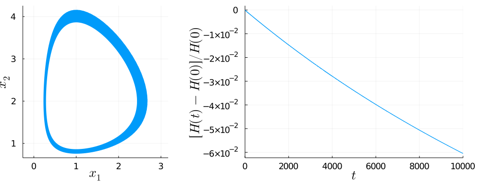
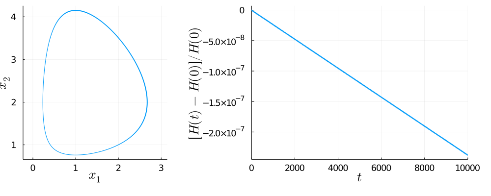
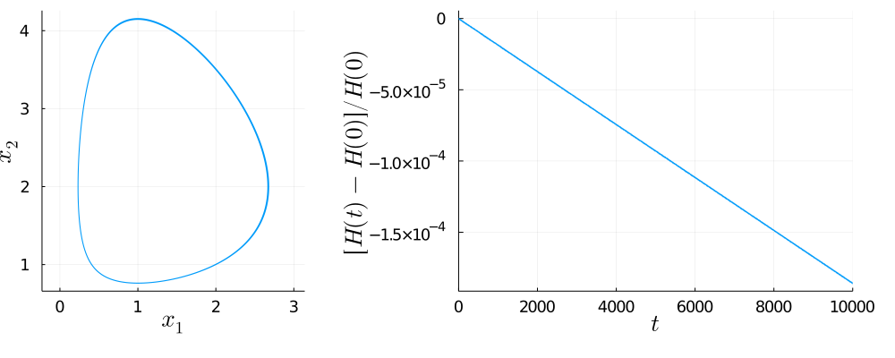

Lotka-Volterra 2d with SPARK Integrators
Gauss-Lobatto SPARK Methods
LobattoIIIABC(2)
Plots • Symplecticity • Tableau: TableauSPARKLobatto

LobattoIIIABC(3)
Plots • Symplecticity • Tableau: TableauSPARKLobatto

LobattoIIIABC(4)
Plots • Symplecticity • Tableau: TableauSPARKLobatto

LobattoIIIABC(5)
Plots • Symplecticity • Tableau: TableauSPARKLobatto

LobattoIIIABD(2)
Plots • Symplecticity • Tableau: TableauSPARKLobatto

LobattoIIIABD(3)
Plots • Symplecticity • Tableau: TableauSPARKLobatto
LobattoIIIABD(4)
Plots • Symplecticity • Tableau: TableauSPARKLobatto

LobattoIIIABD(5)
Plots • Symplecticity • Tableau: TableauSPARKLobatto